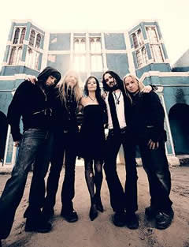
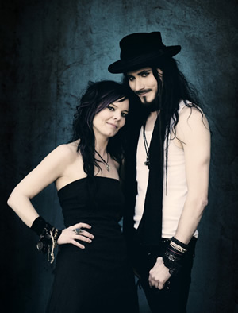

Entrevista de Anette Olzon e Tuomas Holopainen à Metal-Rules.com - Junho de 2007
O que você está sentindo agora que já foi revelado há pelo menos uma semana que a Anette é a nova vocalista do Nightwish? Quero dizer, deve ter sido bem difícil manter o nome dela por baixo dos panos por tanto tempo... Tuomas: O maior sentimento que eu tenho neste momento é alívio, pois eu não tenho mais que escondê-la. E deve ser um grande alívio para ela também, porque mantê-la numa "caverna" durante todo esse tempo não foi lá muito divertido. Mas era algo que precisava ser feito. E nós ainda terminamos a mixagem do álbum sexta-feira passada, então nós temos ele finalizado. Além disso, as pessoas, a banda e a imprensa estão dando as boas-vindas de um modo bastante agradável. Pessoalmente, eu estava esperando que este momento fosse muito pior (risos)! Então, tudo parece estar indo bem...
Quando ficou realmente claro para a banda que a Anette seria a escolha perfeita para ser a nova vocalista do Nightwish? Afinal, vocês receberam mais de 2.000 demos de pessoas ao redor do mundo inteiro, então passar por toda essa pilha de demos já deve ter sido uma tarefa bastante difícil - imagine escolher uma candidata final e chamá-la para fazer parte da banda... Tuomas: Foi no final de janeiro de 2007. Tivemos uma longa discussão entre os membros da banda sobre a nossa decisão final para a nova vocalista, porque queríamos ter certeza de que tínhamos analisado todas as opções disponíveis, virado todas as pedras. Mas ela foi uma das primeiras a mandar a demo para nós, uma das vinte primeiras, eu acho, cantando somente "Ever Dream", e causou uma ótima impressão. Eu acho que ela conseguiu ajustar a escala para o que viria. Então, ela estava lá, desde o começo deste processo.
O próximo álbum do Nightwish conterá treze músicas no total. Quais são, na sua opinião, as maiores diferenças entre essas e as músicas no Once? Tuomas: Gravamos quinze músicas no total. Destas, treze estarão no novo álbum. Eu acho que a maior diferença de todas está aqui sentada ao meu lado, que são os vocais da Anette. Quero dizer, musicalmente eu não acho que o novo disco se diferencie assim tanto do Once. Há alguns novos elementos nele, como os instrumentos celtas, a voz dos sopranos, o coro gospel e um monte de pequenos detalhes aqui e ali. Mas o sentimento geral que está presente nas canções, é que elas são uma seqüência natural do Once. Não queríamos fazer nenhuma mudança muito radical porque ela por si só (Anette) já é uma grande mudança para o nosso som.
Você consideraria esta música em particular, The Poet and the Pendulum, um de seus trabalhos mais ambiciosos de toda a sua carreira no Nightwish? Tuomas: Acho que esta é a minha favorita no momento, de todas as músicas que eu já fiz. Simplesmente isso. O que quero dizer é que para mim é mais fácil fazer músicas épicas e longas do que canções com quatro minutos. Conseguir fazer uma música com esta duração que seja interessante é muito mais difícil, é mais fácil fazer esses longos épicos. Essa música é também definitivamente a canção mais ambiciosa que eu já fiz. É como... não é nem uma música; é mais como se fosse uma peça de teatro em forma de canção.
Deve ser mais fácil para você escrever essas músicas maiores porque você é um grande fã de trilhas sonoras e essas coisas... Tuomas: Sim, é daí que eu tiro a maioria das minhas inspirações. Eu tento pensar em nossas músicas como uma trilha sonora. Mas a quantidade de conteúdo que The Poet and the Pendulum absorveu, com a orquestra e o coro, os instrumentos celtas, a voz dos sopranos, Anette e Marco cantando... e ainda tem o Marco "rosnando", além de todos os efeitos criados pelo Sr. Jussi Tegelman em Hollywood... É uma música realmente grandiosa.
Então vocês irão para a turnê nos Estados Unidos, começando em Springfield em 15 de outubro (cujo show já teve os ingressos esgotados), e farão outros vinte shows por lá, o que é um pouco estranho para mim. Por que vocês escolheram essa turnê nos EUA primeiro em vez de começar pela Europa? Faz alguma diferença por onde vocês começam a turnê? Tuomas: Há uma razão bastante simples para isso. Nós não somos muito conhecidos nos EUA, e tocamos em alguns lugares relativamente pequenos por lá - e nós realmente precisamos nos ajustar e ajustá-la (Annete) à banda.
Anette: Eu também acho que essa é uma boa idéia. E depois disso eu acho que nós estaremos realmente afinados como uma banda, e poderemos voltar para a Europa e fazer grandes shows aqui. Então eu acredito que poderemos nos apresentar bem melhor para os nossos fãs.
Depois disso vocês farão catorze shows em países escandinavos o que, eu aposto, é algo que vocês realmente estão ansiosos para fazer, já que tocar em frente aos fãs de sua terra natal gera combustível para que vocês se sintam bastante inflamados, não é verdade? Tuomas: Sim. Essa turnê escandinava vai incluir oito shows na Finlândia também. Entretanto, tocar na frente das pessoas que moram no meu país me assusta pra caralho.
Anette: A mim também. Na verdade eu não me sinto tão assustada de fazer esses shows nos EUA. Já na Europa, é claro que todos os seus fãs estarão em alguns shows. E sempre que há alguém que você conhece na platéia, é muito pior subir ao palco.
Tuomas: Afinal, aqui nós somos grandes - e por causa disso precisamos corresponder às expectativas das pessoas.
O que mais vai acontecer na turnê do Nightwish para 2008? Há alguma data já marcada para 2008? Tuomas: Nada está fechado, mas haverá uma turnê européia a seguir, uma nova turnê na América, talvez Japão, Austrália também - e um monte de festivais também no verão. Estamos na Finlândia, então há um monte de possibilidades para tocar nesses festivais de verão. Mas esses virão depois, então nós não temos muito para falar sobre eles ainda.
E para você, Anette? Que tipo de desafio tem sido aprender todas essas outras músicas do Nightwish para a turnê? Anette: É sempre um desafio quando você precisa aprender novas músicas. Na primeira vez em que você tenta algo novo, é sempre um grande desafio antes de você se tornar realmente familiar com as músicas; saber as letras de modo que você possa deixar o papel de lado e sair cantando é difícil. Claro que ajustar a minha voz para o material antigo do Nightwish da antiga vocalista já é um grande desafio - como cantar essas músicas no meu próprio estilo. Eu acho que esse é o maior desafio para mim, pessoalmente.
Tuomas: Para ser honesto, ela tem cantado muito bem as músicas antigas, inclusive as canções que ela pôs na demo e nos mandou para audição. Nós vamos tocar essas músicas ao vivo, assim como as que Annete cantou para a demo. Quero dizer, as músicas que ela cantou para a demo soam realmente boas.
Será que podemos ver sua banda anterior, Alyson Avenue, para um aquecimento até sua estréia no Nightwish? Anette: Ha-ha-ha! Alyson Avenue é bem diferente. Você sabe, nós ficamos juntos por muitos anos e às vezes precisamos separar os estilos, isso é natural. Mas eles têm uma banda nova, talvez até possam nos aquecer; quem sabe, (risos)! Sua nova banda tem um rock mais melódico, então talvez não encaixem exatamente como aquecimento para uma banda como o Nightwish. De qualquer forma, não sou a pessoa certa a decidir isso.
Anette: Muito obrigado, muito obrigado.
Tuomas: Obrigado. Foi um prazer falar com você.
Traduzida por Luiz Eduardo Freitas Extraída de metal-rules.com
|